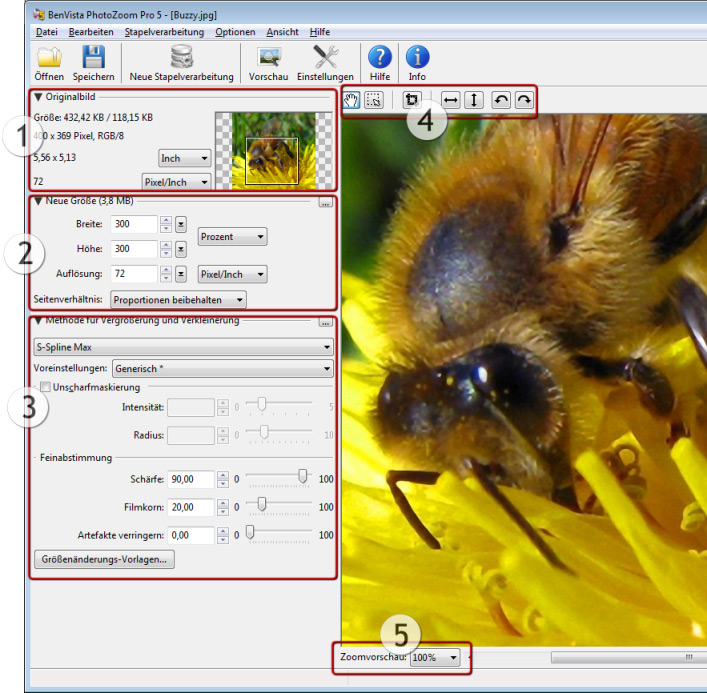

Die Programmerklärung
PhotoZoom Pro 5 bietet eine große Auswahl von Funktionalitäten, von grundlegend bis weit fortgeschritten. Die Bedienoberfläche der Software ist in verschiedene Abschnitte unterteilt, die unten separat erklärt werden:

1) Originalbild
Dieser Abschnitt enthält Informationen über das Original-Bild und einen Navigationsbereich.
Das Navigationsfeld zeigt ein Miniaturbild von dem Bild. Der aktuell dargestellte Teil des Bildes wird durch ein Rechteck gekennzeichnet. Sie können dieses Rechteck mithilfe ihrer Maus bewegen, um eine Vorschau von anderen Flächen des Bildes zu erhalten.
2) Neue Größe
In diesem Bereich können Sie die gewünschte neue Bildgröße anhand von Pixeln, prozentualem Anteil des Originalbildes, Inches, Zentimeter, Millimeter usw. festlegen. Alle Größen sind durch Breite mal Höhe definiert. Sie können die Größe des Bildes abändern, indem Sie neue Werte eintippen oder indem Sie die Pfeilbuttons mit Ihrer Maus anklicken (und gedrückt halten). Sobald Sie die Bildgröße ändern, aktualisiert sich die Bildvorschau im Vorschaufenster unmittelbar.
Für Druckvorhaben sollte die benötigte Breite und Höhe in geeigneten Einheiten festgelegt werden, zum Beispiel in Inches oder Millimetern. Außerdem ist er wichtig, dass Sie eine passende Druckauflösung festlegen.
 Eine Druckauflösung von 300 Pixeln pro Inch ist üblich und für die meisten Druckvorhaben notwendig.
Eine Druckauflösung von 300 Pixeln pro Inch ist üblich und für die meisten Druckvorhaben notwendig.
Klicken Sie auf den  -Button, um aus einer Liste von gängigen Druck- und Pixelgrößenvoreinstellungen auszuwählen.
-Button, um aus einer Liste von gängigen Druck- und Pixelgrößenvoreinstellungen auszuwählen.
Seitenverhältnis
Die "Seitenverhältnis"-Einstellung bietet drei Optionen: "Seitenverhältnis beibehalten", "Strecken" und "Ausschneiden". Diese Einstellungen funktionieren wie folgt:
- Seitenverhältnis beibehalten: Wenn Sie die Breite des Bildes verändern, ändert PhotoZoom Pro 5 automatisch die Höhe (und andersherum), um die Proportionen des Bildes beizubehalten.
- Strecken: Sie können das Bild ohne Beachtung des originalen Seitenverhältnisses strecken.
- Ausschneiden: Legen Sie die gewünschte neue Größe des Bildes fest und PhotoZoom Pro 5 schneidet automatisch die Region, basierend auf der neu festgelegten Größe aus. Um die Region, die Sie ausschneiden wollen anzupassen, klicken Sie "Anpassen...".
3) Methode für Vergrößerung und Verkleinerung
Es gibt mehrere Vergrößerungsmethoden, zwischen denen Sie wählen können. Standardmäßig ist S-Spline Max eingestellt, die neue und verbesserte S-Spline Technologie, die normalerweise das beste Ergebnis liefert. Aber es ist auch möglich eine der anderen Methoden auszuwählen. Jede Vergrößerungsmethode hat bestimme Einstellungen, die feinabgestimmt werden können, und es gibt einige Voreinstellungen, die vordefinierte Einstellungen enthalten (entwickelt für verschiedene Arten von Bildern). Die standardmäßigen Voreinstellungen (markiert mit *) für jede Vergrößerungsmethode sind "Durchschnitts-"Einstellungen. Die standardmäßige Voreinstellung von S-Spline Max (bezeichnet mit "Generisch") liefert in den meisten Fällen das beste Ergbenis, aber für optimale Ergebnisse ist es empfehlenswert, auch die anderen S-Spline Max Voreinstellungen auszuprobieren, und gegebenenfalls an ihre Bedürfnisse anzupassen.
Klicken Sie den -Button, um eine andere Methode zur Größenveränderung oder/und Vorlage auszuwählen.
Die Vergrößerungsmethoden "S-Spline Max", "S-Spline XL" und "S-Spline" können vollständig an Ihre Bedürfnisse angepasst werden. Detaillierte Erklärungen und Tipps finden Sie im Kapitel Feinabstimmung.
Wenn Sie die Einstellungen der Methoden zur Größenänderung manuell anpassen, wechselt die ausgewählte Vorlage automatisch zu "Benutzerdefiniert".
Sie können eine selbsterstellte Vorlage speichern, indem Sie die "Eigene Vorlage hinzufügen..."-Option aus dem "Vorlagen"-Menü auswählen. So können Sie Ihre Vorlage später erneut nutzen, ohne wieder Feineinstellungen an dieser vornehmen zu müssen. Um eine eigene Vorlage zu löschen oder umzubenennen, wählen Sie die "Eigene Vorlagen verwalten..."-Option aus dem "Vorlagen"-Menü aus.
Größenänderungs-Vorlagen
Durch klicken des "Bildgrößen-Vorlagen..."-Buttons, können Sie Ihre Bildgrößen-Vorlagen auswählen, hinzufügen und verwalten.
Eine Bildgrößen-Vorlage ist eine Zusammenstellung von Methoden zur Größenänderung und Größeneinstellungen. Wenn Sie eine Bildgrößen-Vorlage auswählen, wählen Sie alle Einstellungen der Vorlage in einem Schritt aus. Beispielsweise könnte eine Bildgrößen-Vorlage folgende Einstellungen beinhalten:
- Neue Größe: 11 mal 17 Inches @ 300 Pixel pro Inch
- Methode der Größenänderung: S-Spline Max, unter Nutzung der "Foto - Detailliert"-Vorlage
Wenn Sie die gleichen Einstellungen öfters benutzen, können die Bildgrößen-Vorlagen Ihren Workflow deutlich verbessern, da Sie Ihre bevorzugten Einstellungen nicht immer wieder neu eingeben müssen. Stattdessen können Sie einfach eine Bildgrößen-Vorlage mit einem einzigen Klick auswählen.
4) Navigieren, beschneiden, spiegeln und drehen
Mit den Buttons, die unten erklärt sind, können Sie schnell mit dem Bild arbeiten und es beschneiden, drehen und spiegeln.
Das "Navigationswerkzeug"  , das standardgemäß ausgewählt wurde, wird benutzt um verschiedene Ausschnitte des Bildes im Vorschaufenster anzuzeigen. Beachten Sie, dass Sie diese Funktion nur verwenden können, wenn das Bild nicht vollständig in das Vorschaufenster hinein passt. Wenn nötig, reaktivieren Sie das Navigationswerkzeug indem Sie es anklicken. Ziehen Sie das Bild durch das Vorschaufenster, um den gewünschten Ausschnitt anzeigen zu lassen. Für denselben Zweck können Sie auch, wenn Ihnen das lieber ist, das Navigationsfeld benutzen (links vom "Navigationswerkzeug").
, das standardgemäß ausgewählt wurde, wird benutzt um verschiedene Ausschnitte des Bildes im Vorschaufenster anzuzeigen. Beachten Sie, dass Sie diese Funktion nur verwenden können, wenn das Bild nicht vollständig in das Vorschaufenster hinein passt. Wenn nötig, reaktivieren Sie das Navigationswerkzeug indem Sie es anklicken. Ziehen Sie das Bild durch das Vorschaufenster, um den gewünschten Ausschnitt anzeigen zu lassen. Für denselben Zweck können Sie auch, wenn Ihnen das lieber ist, das Navigationsfeld benutzen (links vom "Navigationswerkzeug").
Mit dem "Markierungswerkzeug" können Sie einen Teil des Bildes markieren. Klicken Sie das Markierungswerkzeug an, um es zu aktivieren. Um einen Bereich zu markieren, klicken Sie und ziehen Sie einen Rahmen im Bild auf (klicken Sie und halten Sie den linken Mausknopf, während Sie Ihre Maus bewegen, lassen Sie dann los, um die gewünschte Auswahl zu treffen).
Sobald Sie einen Teil des Bildes im Vorschaufenster ausgewählt haben, erscheint das "Beschneidungswerkzeug"  . Klicken Sie dieses an, um den Teil auszuschneiden, den Sie zuvor durch Benutzung des "Markierungswerkzeuges" ausgewählt haben.
. Klicken Sie dieses an, um den Teil auszuschneiden, den Sie zuvor durch Benutzung des "Markierungswerkzeuges" ausgewählt haben.
Indem Sie die verschiedenen Pfeil-Tasten benutzen, kann das Bild horizontal und vertikal gespiegelt werden und mit und gegen den Uhrzeigersinn gedreht werden.
5) Zoomvorschau
Mit dieser Funktion können Sie in das Vorschaufenster hinein- beziehungsweise herauszoomen. Beachten Sie, dass diese Option nur für die Bildschirmdarstellung verwendet wird. Hinein- und Herauszoomen verwendet KEINE größenverändernde Technik und hat keinen tatsächlichen Einfluss auf das Bild. Um zu sehen, wie das Bild nach einer Größenveränderung aussieht, oder um verschiedene größenverändernde Methoden genau zu vergleichen, stellen Sie sicher, dass die Einstellung auf 100% steht.